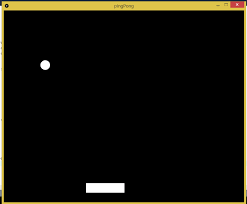

The challenges we faced in this lab included making sure our headers and paragraphs were in the right places and making sure we had the proper tags for them. We also felt that the most challenging part of this project was coming up with the initial idea, and then breaking it into the necessary substeps we needed

1. Put a fitted sheet over the bare mattress 2. Lay an unfitted sheet over the bed 3. Tuck the overhanging sides under the mattress 4. Arrange the desired pillows at the head of the bed 5. Put comforter over the bed 6. Fold top of comforter so the pillows are exposed 7. Fold blanket at foot of the bed
The task we wanted the computer to perform was a playable, minimalistic pong game. Using the outlined model, we attempted to break down the necessary steps in order to bring the game into existence. We determined that we felt relatively confident in the steps we created, however we had some doubts. A concern is that the steps weren't simple enough tasks, and if there were any parameters or elements we missed.
Creating interactive Pong Game: 1. Create a border with limitations 2. Establish point of interaction for player 3. Establish point system for when the player scores 4. Create paddle to hit the ball with 5. Accept player input 6. Establish ball’s possible trajectories 7. Randomly generate inputs for ball’s trajectory 8. Create a target for scoring points
//Create a border of limitations
//Establish point of interaction for player
//Create paddle to hit the ball with
//Generate a ball for interaction
//Establish ball’s possible trajectories
//Randomly generate inputs for ball’s trajectory
//Establish point system for when the player scores
//Create a target for scoring points
//Accept player input